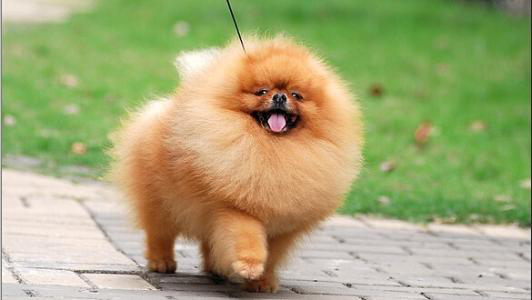
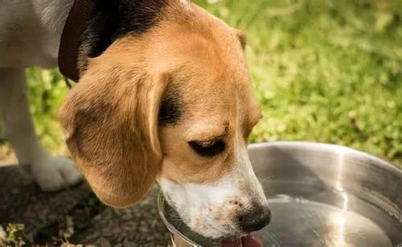

相信不少宠主在饲养狗狗的过程中，有遇到狗狗拉便便拉出血的情况吧，那么狗狗拉稀带 血我们应该怎么办呢？可以添加豆柴医生的 微信号：douchai144，随时免费为你提供各种问题咨询。

造成拉血的原因：1、造成狗狗拉稀拉出血的原因有很多，例如狗狗吃太多的尖骨头也是会导致狗狗拉出血的。 2、还有狗狗得了肠胃炎也是会导致拉出血的情况。 3、最常见的就是细小了，狗狗得了细小最明显的情况就是拉出血和呕吐。 4、还有狗狗患上体内寄生虫也是会导致拉肚子拉出血现象的。

解决办法： 建议帮狗狗定期驱虫，幼犬应每月进行一次检查，应根据寄生虫的类别，选用适当的高效低毒驱虫药进行驱虫。幼犬应在出生后20～30天进行第一次驱虫，成年犬每三个月驱虫一次。 平时应当多注意一下狗狗的卫生、还有居住环境，狗狗的护理也不能少！ 更多详细的解决方案，可以添加豆柴医生的 微信号：douchai144进行一对一咨询。
平时应该加强营养，增强抵抗力，当犬只抵抗力下降后，其胃肠屏障机能也相应减弱，导致肠道致病菌大量繁殖，最终引起肠胃炎。 狗狗肠胃脆弱最好就是喂食一些益生菌，就好像下面的那款益生菌，有效帮助调理肠胃，增加有益菌，抑制有害菌，对肠胃脆弱的狗狗最好了！
细小病毒的治疗，越早越好，狗狗的预后也会更好。细小是可以治愈的，但必须采用积极治疗方案。 可能包括：住院，隔离狗狗，持续的吊水。治疗过程可能几天，也可能几周。 想要减少狗狗暴露在细小细菌环境下，就要及时接种疫苗，幼犬不要接触太多狗狗，不要接触其他动物的粪便，做好消毒工作，不要让狗狗感冒，抵抗力下降！
还有平时不要给狗狗喂食尖骨头了，要吃最好就是喂食猪牛羊等大骨头，既能帮助狗狗补点钙，也能磨牙、祛口臭、预防牙结石等。 要是不适合喂骨头，可以改成一些带有磨牙效果的狗零食。就好比下面的那款磨牙零食，不仅能帮助狗狗训练，也能给狗狗磨牙祛口臭、预防牙结石等问题！